Craft · geometry · photographic inference
A necklace.
A photograph.
A hidden pattern.
A crocheted rope carries a repeating string of red, yellow and black beads. Can one photograph reveal the sequence—even when much of it faces away?

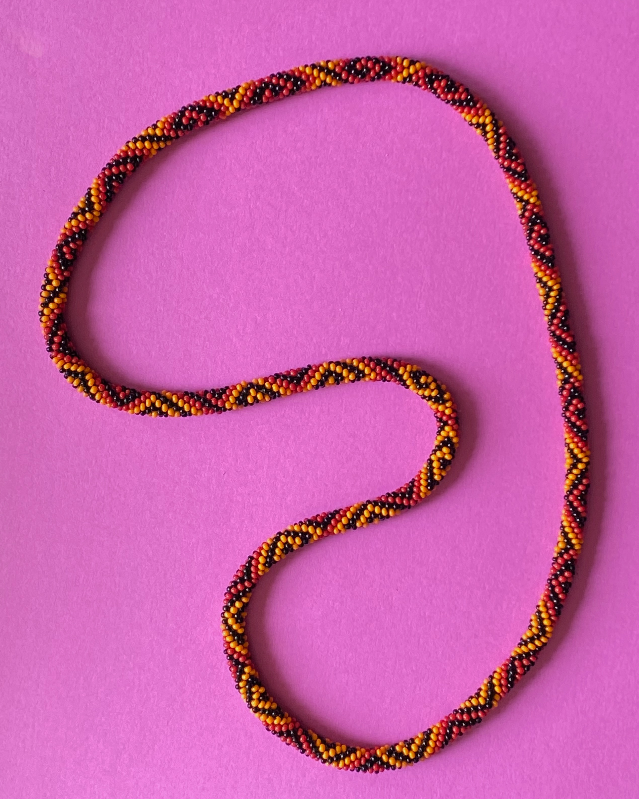

What is a beaded rope?
Thirteen beads.
Two turns around the tube.
The original POV-Ray program starts with a color sequence, places rounded beads with open bores along a coiled rope, and ray traces bracelets. Its eight built-in examples explore how a string becomes a surface pattern.
In the ideal 6.5-beads-per-turn convention, thirteen string positions span two turns. Unroll the surface onto graph paper and the rows alternate between six and seven beads.
On the mathematical chart, each step adds +1 right, +6 up-left, or +7 up-right. The chart records string addresses; it is not a perspective picture of bead centers.
Side continuations reveal structures wrapping around the tube. They show the same addresses again and add no observations.
Use the standalone graph-paper tool ↗
Read the original model’s sine-angle qualification
How was the sequence inferred?
Follow the neighbors.
Then test the repeat.
A bright spot is a feature, not automatically a bead. The research connected proposed bodies using photographic row relationships, overlap and exact integer consistency. Those lattice addresses made it possible to combine color readings from different occurrences.
The result is a 208-position candidate. Every position has a recorded observation somewhere in the photograph. Seven black positions have too little geographic corroboration to count as strictly supported.
| Assessment | Supported / conflicting / insufficient | Recorded-label agreement |
|---|---|---|
| Historical R344 | 199 / 2 / 7 | 1,038 / 1,041 |
| R347 maker answers | 201 / 0 / 7 | 1,040 / 1,040 retained |
“Supported” requires an uncontradicted color in at least three observations and three fixed geographic blocks. Agreement with these repeatedly studied photographic labels is not independently measured physical accuracy.

Presentation regenerated from saved sequences using the extracted Python layout; no new inference. Select any copy to highlight its pattern position. Download the two-epoch data · Historical R344 print PDF
See the authentic R344 strict / provisional graph-paper figure

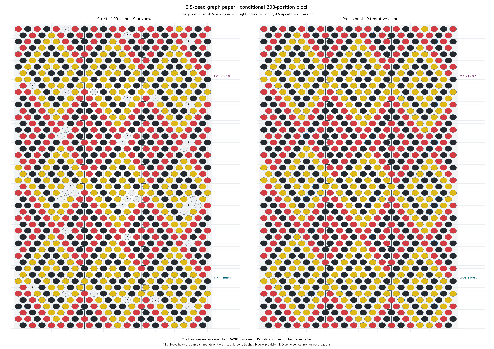
Three reviewed cues; two corrections and one abstention
Two former software-red readings received maker photo-based yellow corrections. Another cue was unreadable independently of the reconstruction and was withheld. Its selected yellow supplies no independent confirmation.
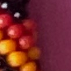
Pigment withheld. Reconstruction-assisted yellow is not evidence.
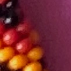
Maker photo-based yellow. Historical red preserved.
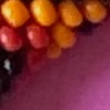
Maker photo-based yellow. Historical red preserved.
Saved 121×121 native crops, with targets near their centers. These are image cues, not measured bead centers. Exact source IDs, coordinates and crop boxes · Original numbered keys and proposed adjacency. Q1–3 are completed; no new answers are requested.
What about the hidden side?
Different views can fill
the same pattern’s gaps.
A repeat divisible by thirteen returns each position to the same phase around the tube. Equally oriented repeats in one fixed view can keep the same colors hidden. Different viewing directions—or suitably oriented occurrences along a curved rope—can expose them, if their addresses can be matched reliably.

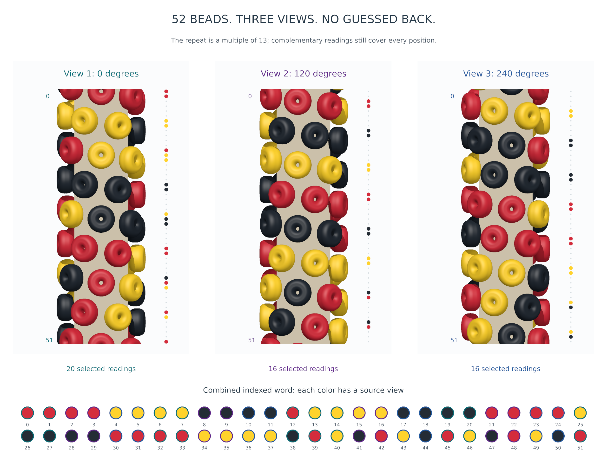

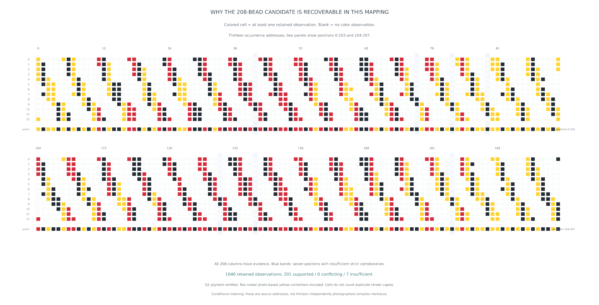
A controlled example where the front cannot identify the back
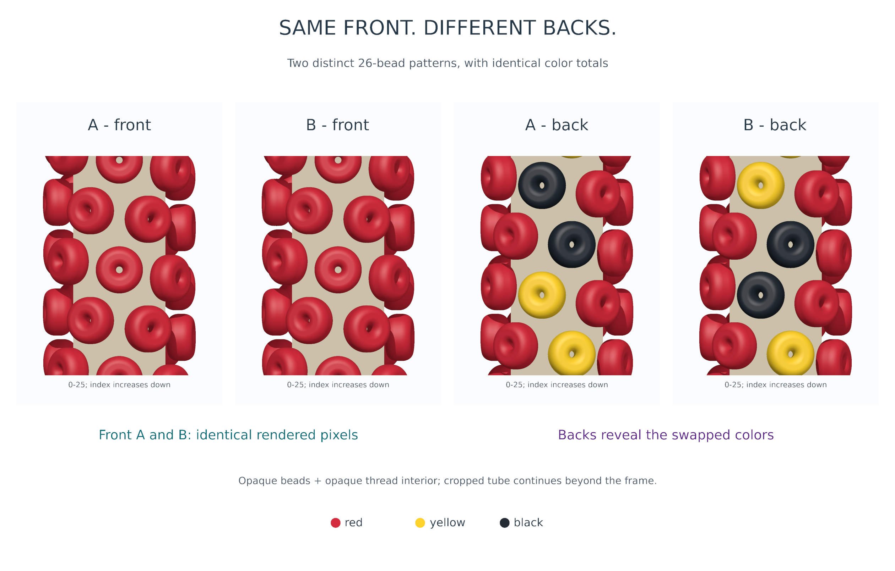
What does the reconstruction look like?
A complete numerical necklace.
R345 constructs 2,704 separate rounded, hollow beads, repeating the provisional 208-position word thirteen times with 416 minor turns. It uses the original bead shape and an approximate image-axis spline, with smooth whole-necklace station and phase adjustments.
Saved checks certify closure and nonintersection for all 8,112 nearby pairs needing examination. That solves interpenetration for this chosen scene.
The render is more regular and glossy than the photograph. Enlarged views retain real differences in spacing, pose, silhouette and paper texture.

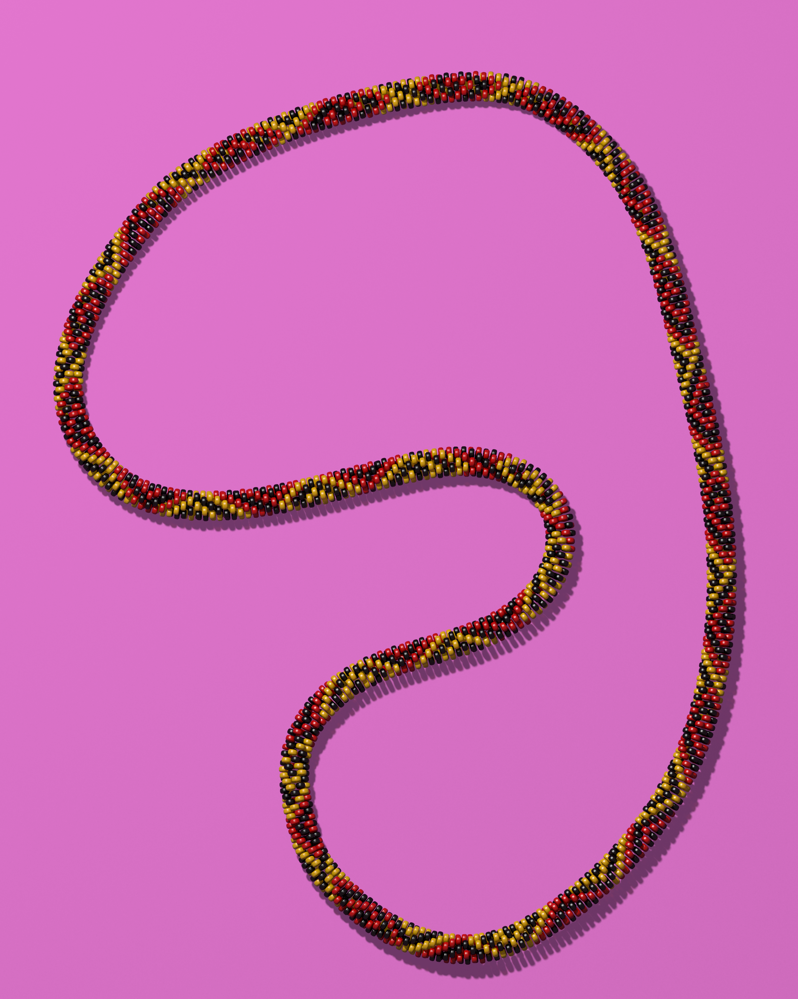
How did the lighting improve?
Let the whole shadow
describe the light.
R345’s shadow was too short and sharp. R346 kept the camera, every bead transform, all materials and the paper fixed. One large tilted area source and shared warm room fill produced a longer, softer whole-necklace shadow.

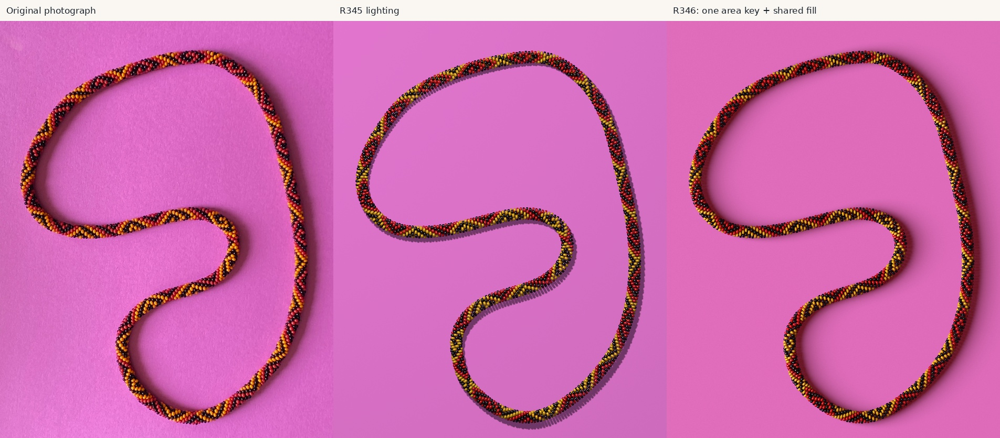
Paper-profile RMS, percentage points
All eligible contours, R345 → R346
Paper-profile RMS, percentage points
Reserved geographic stations, R345 → R346
The analysis samples 96 stations on both sides, using 142 of 192 contours after grayscale boundary checks. Conservative guards exclude bead material. A smooth paper reference is estimated far from the necklace; the measurement is relative photographic brightness loss, not calibrated physical accuracy.

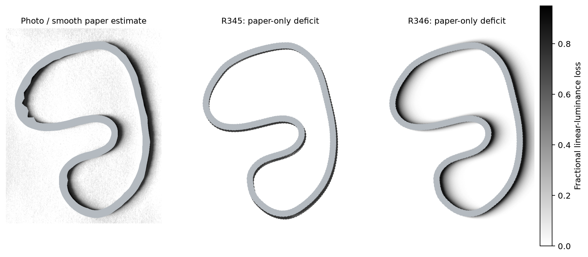
Profiles and an enlarged bend
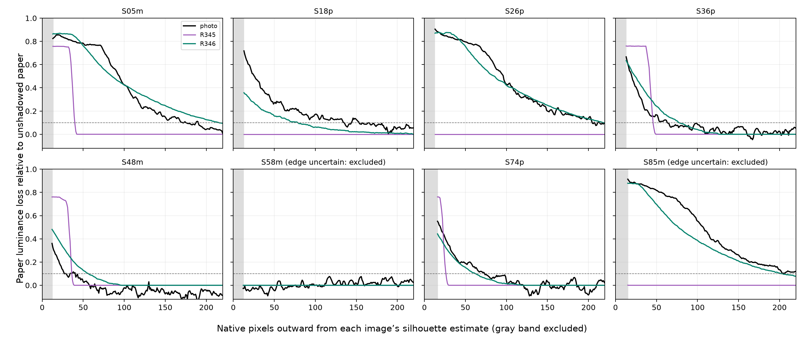
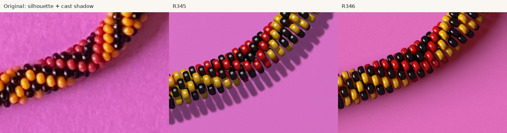
A plausible shared light, not a unique lamp calibration. The true contact shadow under the bodies remains mostly hidden; paper-reference, silhouette and color-transfer uncertainty remain. No individual-bead shadow targets or section lights were introduced.
What remains uncertain?
A candidate has premises.
A render has choices.
- Seven provisional black positions: 43, 75, 82, 89, 140, 147 and 186. They have observations, but insufficient geographic corroboration.
- Count and topology: A/208 is uniquely compatible only within the accepted lattice, H=(214,201), specified A/B counting conventions, complete-repeat premise and period below 400. Those premises are not independently proven.
- Physical geometry and optics: the camera, centerline, dimensions, bead poses and lighting remain approximate. The full model’s validity does not make them measured quantities.
- Authentic chart and necklace: neither has yet supplied independent confirmation. A chart match under cyclic offset/reversal would confirm intended design, separately from every assembled bead.
Future work should seek discriminating evidence: the authentic chart, usable independent views of tentative pigments, and physical count/correspondence checks. These are recommendations; this publication starts no new reconstruction campaign.
Study it. Reuse it.
Small tools, an open record,
and the experiments behind it.
Start with the useful parts
- Sequence-only graph-paper tool ↗Standard-library Python; arbitrary repeat lengths, negative indices and stepped cuts. Independent tests; no photographic inputs.
- Reproduction guide ↗Small local site replay plus pinned full-scene sources, configurations, commands and validation limits.
- Methods and lessons ↗Separate pattern recovery from optics; test known answers; distinguish search failure, inadequate targets and ambiguous measurements.
Keep the complete history
- Pinned research archive ↗Full experiment history, including rejected methods. It remains on photo-2-strategy-v3; this site publishes only selected files.
- Figure provenance and hashesExact original paths and fixed source commit for all copied illustrations and receipts. No historical image was regenerated.
- Historical bead demonstrationOriginal photographs, links and simulated bracelets. The preexisting model and demonstration remain accessible.